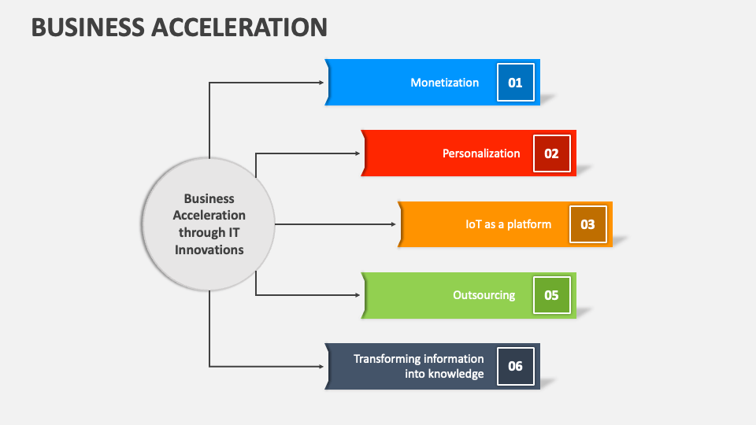
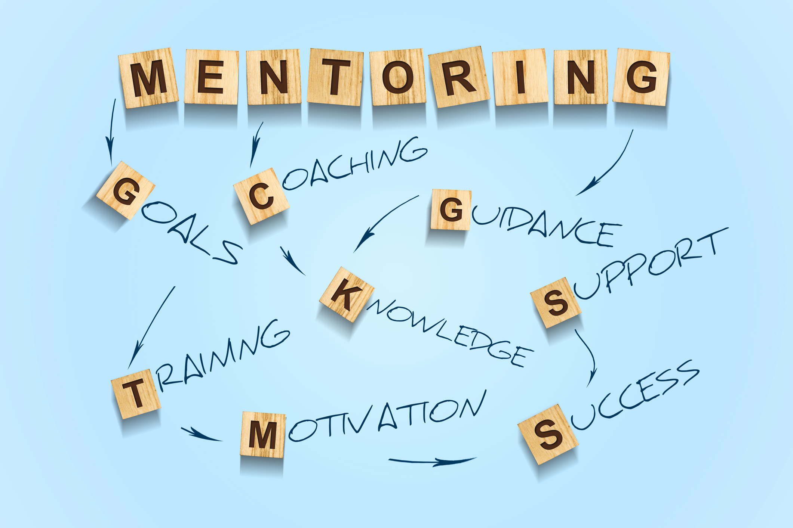

StartUpHub Qazaqstan
Идеядан – нарыққа дейін! Стартапқа арналған бірегей цифрлық платформа.
ҚатысуБіз не ұсынамыз?
Акселерация
Кәсіпкерлікті дамытатын бағдарламалар.
Онлайн және офлайн курстар, MVP әзірлеу, акселератор бағдарламалары мен тренингтер.
Акселерация бағдарламасы кәсіпкерлік идеяларды іске асыру процесін жеделдетуге бағытталған. Ол стартаптардың алғашқы кезеңдерінде жұмыс істейтін кәсіпкерлерге арналған, бұл бағдарлама олардың бизнестерін жүйелі түрде дамытуға мүмкіндік береді. Қатысушылар бағдарламаның барысында өздерінің өнімдерін прототиптен MVP (ең аз өнім) деңгейіне дейін жетілдіру, нарыққа шығару стратегияларын құру, маркетингтік және сату жұмыстарын ұйымдастыру, сондай-ақ қаржылық қолдауды тарту сияқты көптеген аспектілерді қамтиды.
Біздің мақсатымыз — стартаптарды қаржыландыруға дайын инвесторлармен байланыстырып, олардың бизнес жоспарларын жүзеге асыру үшін қажетті білім мен ресурстарды қамтамасыз ету. Бағдарлама барысында қатысушыларды тәжірибелі менторлармен, тренерлермен және сала сарапшыларымен таныстыру жоспарланған. Сонымен қатар, әрбір стартап өзінің бәсекеге қабілеттілігін арттыру үшін қажетті барлық құралдарды алу мүмкіндігіне ие болады, бұл оларды әлемдік нарыққа шығару үшін идеалды ортада қалыптастырады.
Инвесторларға жол
Жобаңызға қаржыландыру мүмкіндігі.
Инвесторлармен кездесулер, Demo Day, инвестициялық раундтар және гранттар.
Инвесторларға жол бағдарламасы стартаптарға қажетті қаржылық қолдау алу үшін мүмкіндіктер ұсынады. Қатысушылар өз жобаларын таныстыру үшін Demo Day немесе жеке кездесулерде қатыса алады, бұл мүмкіндік инвесторлармен тікелей қарым-қатынас орнатуға көмектеседі. Сонымен қатар, стартаптар әртүрлі гранттар мен инвестициялық бағдарламаларға қатысу мүмкіндігіне ие болады. Біз инвесторлар мен стартаптардың арасында тиімді байланыс орнатуға мүмкіндік беретін бірегей алаң ұсынамыз.
Инвесторлар мен стартаптар арасындағы ынтымақтастықты нығайту үшін біз арнайы байланыс платформаларын әзірледік. Бұл платформалар арқылы стартаптар өздерінің жобаларын кең аудиторияға таныстырып, оларды әлеуетті инвесторларға ұсына алады. Сонымен қатар, қатысушылар венчурлық капиталистермен, бизнес-ангелдермен және басқа да қаржылық мамандармен кездесіп, өздерінің идеяларын талқылап, қаржыландыру мүмкіндіктерін ашуға мүмкіндік алады.
Менторлық
Сала сарапшыларымен байланыс.
Тәжірибелі кәсіпкерлермен жұмыс, стратегиялық даму, масштабтау, байланыс кеңеюі.
Менторлық бағдарламасы кәсіпкерлерге өздерінің жобаларын дамытудың әртүрлі аспектілерінде кеңес алуға мүмкіндік береді. Біз стартаптарға тәжірибелі мамандармен жұмыс істеуге мүмкіндік ұсынамыз, бұл олардың бизнес модельдерін жетілдіруге, өнімдерін нарыққа шығаруға, стратегиялық шешімдер қабылдауға және әртүрлі қиындықтарды жеңуге көмектеседі. Менторлар нарықтағы ең жақсы тәжірибені бөлісіп, өздерінің кеңестерімен стартаптардың даму процесін жеңілдетеді.
Менторлық бағдарламамызда қатысушылар жеке немесе топтық сессияларға қатыса алады. Әрбір сессия барысында олар өздерінің бизнес-идеяларын талқылап, менторлардың нақты ұсыныстарын алады. Менторлар өздерінің тәжірибелері мен білімдерін бөлісіп, стартаптардың кездесетін қиындықтарын жеңуге көмектеседі. Бұл бағдарлама қатысушыларға кәсіби өсу мүмкіндіктерін береді және олардың стартаптарын нарықта табысты ету үшін қажетті құралдарды ұсынады.